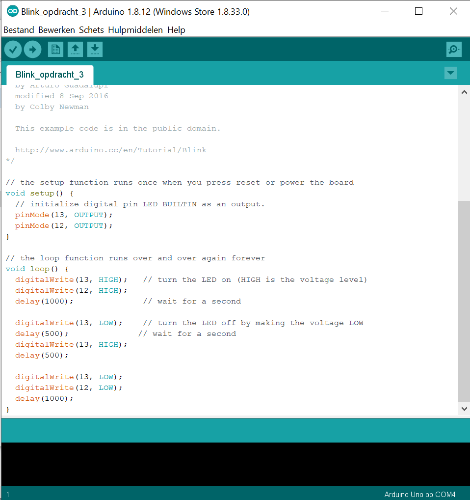
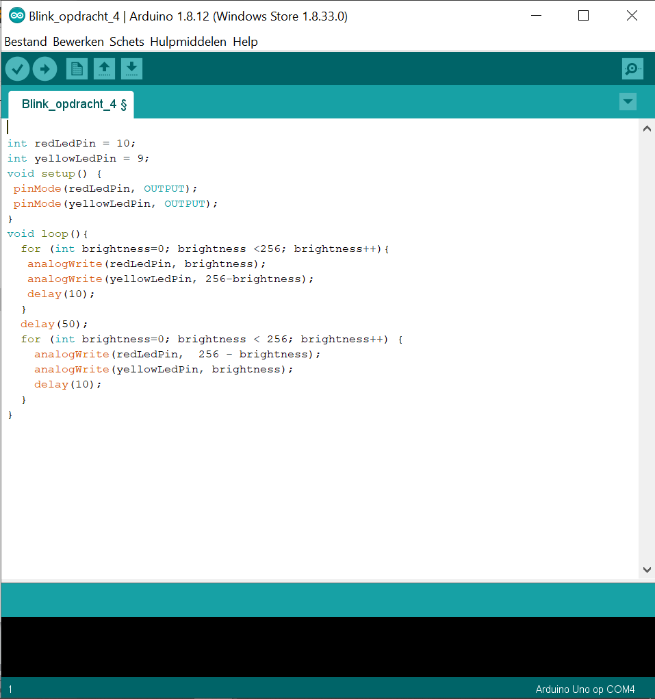
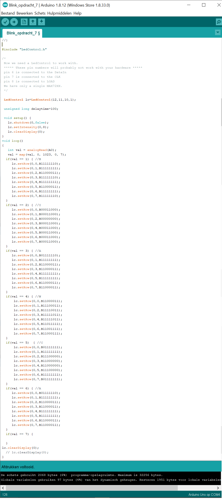

Voor de derde opdracht voor deze workshop moest ik met het Arduino bord twee lampjes aansluiten en laten knipperen in bepaalde volgorden en ritmen. Bij de 'c' van deze opdracht moest ik ervoor zorgen dat het rode lampje 2 keer zo snel knipperde als het gele lampje. Dat was eenvoudig door beide lampjes tegelijk aan te zetten, vervolgens het rode lampje aan en uit laten gaan, en daarna beide lampjes weer uit laten gaan. En omdat het in een loop zit, worden deze stappen herhaald. Hieronder is de code die ik heb gebruikt.
Hieronder is de video om te laten zien hoe het eruitziet. Je kan zien dat het rode lampje 2 keer aan en uitgaat in dezelfde tijd dat het gele lampje 1 keer aan en uitgaat.
Bij de vierde opdracht was het de bedoeling dat ik de 2 lampjes omstebeurt moest laten 'faden'. Dus eerst is het rode lampje aan en vervaagd totdat het uit is tegelijkertijd is het gele lampje uit en vervaagd totdat het aan is. En vervolgens andersom. De code die ik heb gebruikt staat hieronder.
Hieronder is de video om te laten zien hoe het eruitziet.
tekst

tekst
tekst
tekst